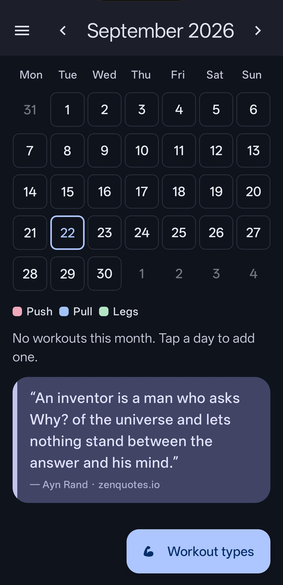
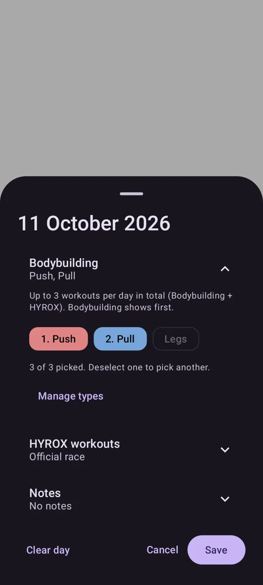
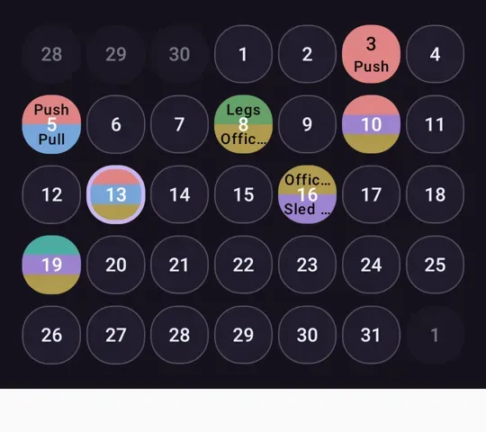
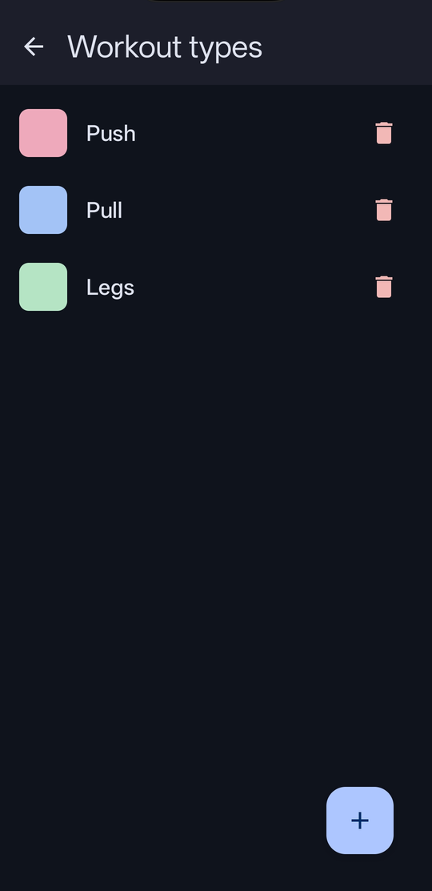
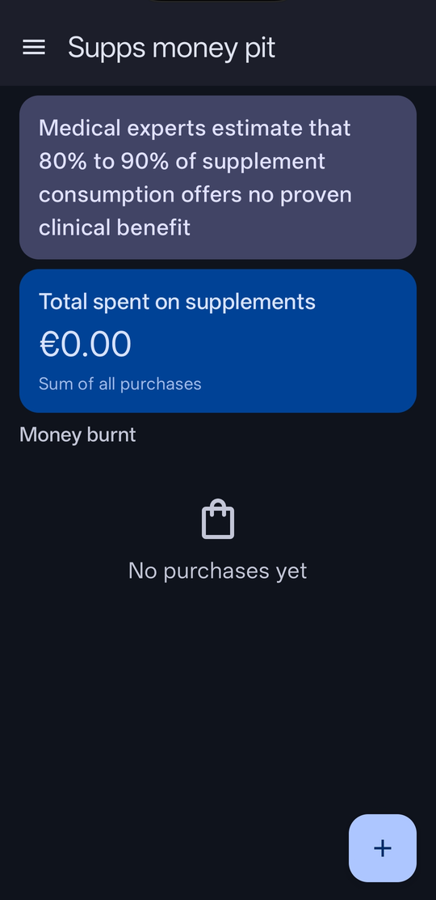
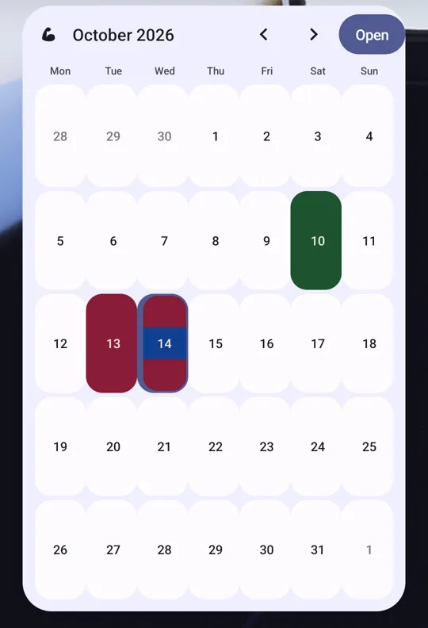

Local workout calendar · No account required · Updated for version 2.0.9
Liftloq keeps your workout plan on your device. Mark days on the calendar, manage workout types, plan and time HYROX workouts, and optionally track supplement spending — without signing in.
1. Mark a workout on the calendar
Open Calendar (home).
Tap a day (or the add button). The day sheet has collapsible Bodybuilding, HYROX workouts and Notes sections.
Pick up to three entries in total (Bodybuilding types and HYROX workouts combined). At 3, the other picks are disabled until you deselect one.
Tap Save. Nothing is stored until you save.
The day shows one colour band per entry: Bodybuilding first, then HYROX.

Calendar: tap a day to open it.

Day sheet at the limit: 3 of 3 picked, the rest is disabled.

Cells with 1, 2 and 3 entries. Names show for 1–2 entries; with 3, the bands show the colours.
2. Add and remove workout types
Open the menu (☰) → Workout types. Or on a day sheet, tap Manage types.
To add: tap +, enter a name, pick a color, then tap Save.
To remove: tap the trash icon on a type, then confirm Delete.

Workout types list: delete with trash, add with +.
3. Track supplements (Supps money pit)
Open the menu (☰) → Supps money pit.
Tap + to add a purchase (name, price, date), then tap Save.
Set currency under Settings (same menu).
See Total spent on supplements and the Money burnt list.

Supps money pit: tap + to add a purchase, then Save.
4. HYROX β
Builder: menu (☰) → HYROX (beta) → +. Name the workout, pick a colour, division and segments (runs and stations with distance/weight), then Save.
Plan it: on a day sheet, open HYROX workouts and pick one or more, then Save.
Start HYROX: on a day with a planned HYROX workout, a Start HYROX button appears above the add button. With several planned, it opens a menu to choose one.
Race mode: tap Split at the end of each segment. Pause freezes the clock (paused time is not counted), Resume continues, the undo button removes the last split. Finish (top bar) asks for confirmation. Then review and Save; results show with an OK button back to the calendar.
Stats: Stats → HYROX β shows History (tap a session for its results), best splits and station decay.
Your HYROX workouts.Builder: name, colour, division and segments.Start HYROX with two workouts planned today.Race mode: total time, current segment, next segment and recent laps vs your best.Paused: the clock is frozen and Split is disabled until you Resume.Results after saving, with OK back to the calendar.Stats → HYROX β.
5. Settings: sections and toggles
Menu (☰) → Settings. Sections: General (language, currency, motivation quote), Modes, Workout plan and About.
Modes: turn Bodybuilding or HYROX (beta) off to hide everything for that mode (calendar entries, legend, stats, widget entries, menu pages). Nothing is deleted; turning it back on restores it. One of the two must stay on.
A language change is applied when you tap Save (bottom right).
Settings: General and Modes.Workout plan (export/import) and About.
6. Widgets
Long-press your home screen → Widgets → Liftloq, then add the week or month widget.
Like the app, weeks start on Monday and each day shows up to 3 colour bands (the week widget adds one-line names).
Widgets update right after you save, delete or import.

Month widget: 14 Oct has three entries.
7. Export / import
Settings → Workout plan → Export workout plan saves a JSON backup (types, days, notes, supplements and HYROX data).
Import workout plan replaces your data from such a file, after a confirmation. Days with more than 3 entries keep the first 3.
Tip: Swipe left below the calendar to cycle Calendar → Workout types → HYROX β → Stats → Supps money pit. Pages for a mode that is off are skipped. Settings stays in the menu only.